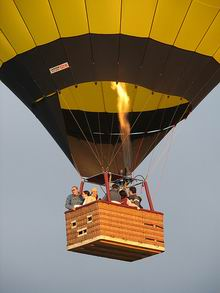

NO ME SALEN
EJERCICIOS RESUELTOS DE FÍSICA DEL CBC
FLUIDOS - PRINCIPIO DE ARQUÍMEDES |
|

|
| |
FIS H.19) Se quiere diseñar un globo aerostático que pueda levantar una carga de 200 kg. El aire en el
interior del mismo se calienta con una llama de manera que su densidad es 0,95 kg/m³ mientras que
el aire exterior, más frío, tiene una densidad de 1,20 kg/m³. ¿Cuál es el radio mínimo del globo?
|
Los globos aerostáticos se construían con gases más livianos que el aire. De los que hay disponibles, el helio es muy caro y difícil de conseguir; y el hidrógeno también es caro y además muy peligroso por su alta inflamabilidad. El aire caliente también es más liviano que el aire frío que tenemos en abundancia en la atmósfera. Y el aire es gratis (por ahora), de modo que sólo se gasta en el combustible de un quemador que lo calienta. Y así funcionan los globos modernos en los que, por otro lado, sólo se consiguen pasajes de primera clase.
|
|
|
|  |
|
Las fuerzas que actúan sobre el globo mientras flota en el aire son: su propio peso total, PT, y la fuerza de sustentación, E, que no es otra que el empuje predicho por Arquímedes, ya que el aire es un fluido y el hecho de que sea un fluido gaseoso no cambia nada.
Mientras el globo no acelere estas fuerzas han de valer lo mismo:
E = PT
Si suponemos que el peso total del globo son los 200 kg (2.000 N) de carga, C, más el peso del globo mismo lleno de aire caliente, PG, tenemos:
E = PG + C
|
El empuje, por más gaseoso que sea, responde al Principio de Arquímedes, de modo que será igual al peso del volumen desalojado. Fijate que el aire desalojado es aire frío, de modo que:
E = ρAfrío . g . V
Y el peso del globo lleno de aire caliente es:
PG = ρAcal . g . V
Donde ρAfrío = 1,2 kg/m3, y ρAcal = 0,95 kg/m3.
Entonces nos queda:
E — PG = C
ρAfrío . g . V — ρAcal . g . V = C
V . g (ρAfrío — ρAcal ) = C
Y el volumen es el volumen aproximadamente de una esfera, que vale 4,19 R3 (podés verificarlo en cualquier libro de geometría o buscarlo en INTERNET), siendo R el radio de la esfera.
R3 = 2.000 N / 0,25 kg/m3. 10 m/s2 . 4,19
|
|
|
|
|
|
|
| |
|
 |
Lo que para un globo aerostático es bastante razonable: dos personas, el canasto y la tela inífuga del globo deben rondar ese peso que da el enunciado. Este ejercicio nos brinda una lección muy interesante si querés ser piloto de globos aerostáticos: para lograr mayor poder ascencional tenés que calentar bien el aire interior del globo (así pesa menos) o buscar ambientes aéreos fríos (así aumenta el empuje).
Es paradójico: los pilotos de planeadores, y las aves planeadoras buscan aires calientes porque saben que en general poseen corrientes ascendentes, y las aprovechan. Los pilotos de globos se manejan con un arma de doble filo: el aire caliente atmosférico le da menor empuje pero generalmente sube, en cambio el aire atmosférico frío le da mayor empuje, pero en general baja.
DESAFÍO: ¿Cuánto pesa el globo (sin carga)? |
|
| |
|
| Algunos derechos reservados.
Se permite su reproducción citando la fuente legítima, o sea, este sitio. Última actualización
jun-11. Buenos Aires, Argentina. |
|
|
| | |
|
|